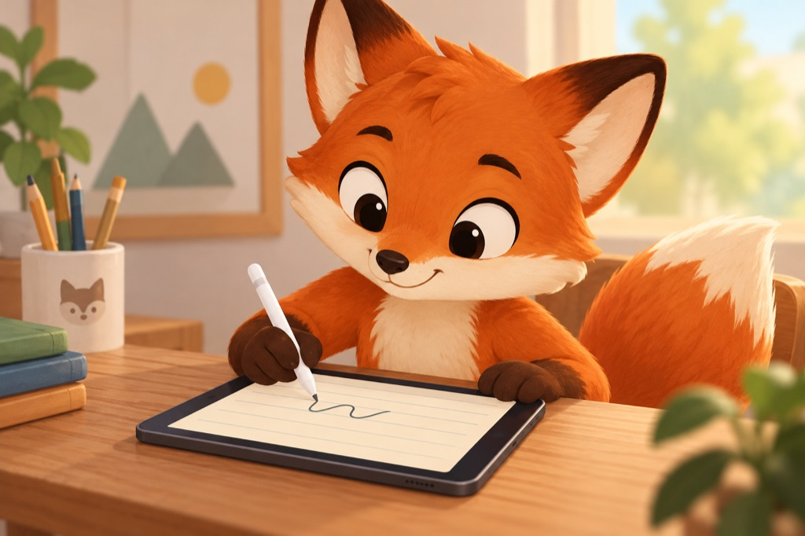

Auch dabei: Zeichnen, Schreiben, Lernen und Fokus
Platz für eigene Ideen und kleine Fortschritte.
Wähle Umfang, Stufe und Hilfen so, wie es heute für dich passt.

Eigene Zeichenwelten
Elf Punktebilder und ein freies Blatt. Leicht anfangen, bis auf 600 % zoomen und mit Farben gestalten. Mehrere Blätter desselben Motivs unabhängig benennen, kopieren und Profilen zuordnen.

Schreiben in deinem Tempo
Drei Druckschrift-Stile, einzelne Buchstaben, kurze Wörter und ganze deutsche Sätze. Mit Apple Pencil oder Finger schreiben; A4-Vorlagen und elf Zusatzblätter als PDF teilen oder drucken.

Konkrete Hinweise
Handschrift erhält Hinweise zur Vorlage statt einer Prozentnote. Vor dem Verlassen kannst du die eigene Seite exportieren. Datum, Titel und Schriftstil abgeschlossener Seiten bleiben im lokalen Verlauf.
Lesen und verstehen
16 deutsche Geschichten und Sachtexte im Wortblitz. Ausdrücklich starten, selbst weitertippen, zurückgehen und vollständig nachlesen. Freiwillige Verständnisfragen ohne zusätzliche XP.

Passende kleine Schritte
Kurze Alphabet-Runden, Kalendernachbarn und Merkfolgen. Einmaleins mit Lernreihen und gezielter Fehlerwiederholung; Uhrzeiten mit eigener Stunden- und Minutenwahl.

Aufmerksam üben
Regelwechsel, Musterpfad, Buchstabenjagd, Detaildetektiv und Rückwärtsrechnen. Dazu geführte Übungen und ein Drei-Atemzüge-Reset mit drei selbst bestätigten Schritten.